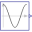

LogicalSampleSimple example of conjunctive and disjunctive logical clocks, combining clock signals to derive new event driven clocks. |
|
Diagram
{kind=link}
Information
This information is part of the Modelica Standard Library maintained by the Modelica Association.
Simple example of two logical clocks, a conjunctive and a disjunctive clock. Both receive the very same clock inputs, produced by two rotational clocks with slightly shifted input angle waves (sine and cosine respectively). The configuration and results of the rotational clocks are explained in the rotational clocks example. The generated clocked signals of the disjunctive and conjunctive clock are therefore:
Components (9)
| sine_angle_input |
Type: Sine |
|
|---|---|---|
|  | cosine_angle_input |
Type: Cosine |
| trigger_interval_input |
Type: Pulse |
|
| rotational_clock_1 |
Type: RotationalClock |
|
| rotational_clock_2 |
Type: RotationalClock |
|
| conjunctiveClock |
Type: ConjunctiveClock |
|
| disjunctiveClock |
Type: DisjunctiveClock |
|
| sample_conjunctive |
Type: SampleClocked |
|
| sample_disjunctive |
Type: SampleClocked |